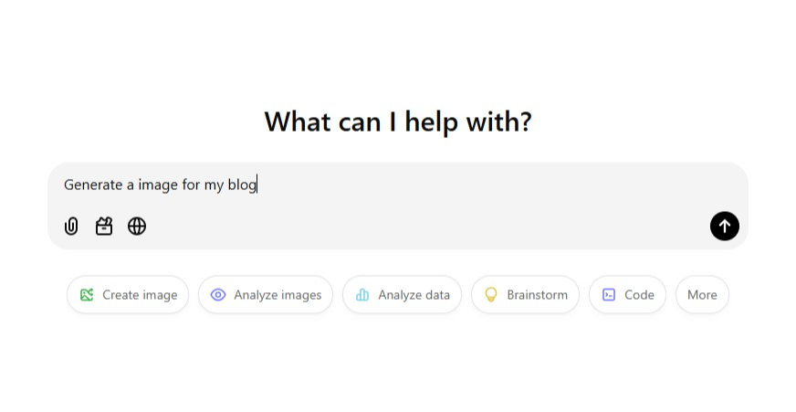

Why?
Why did I make this website and blog?
It's not that I have money to throw away on a domain name. I made this website to actually journal my life.
Now the question is, why do I want to journal my life?
I actually feel that, for the past few months, life has been moving pretty fast since I joined college. It seems like I am not able to give my brain the time to self-reflect and appreciate the things happening in my life.
Another question is, why would I want to show my journal to the whole world?
Actually, those who know me are aware that I am a very reserved person and talk very little about my life and what I do. This is just my nature, and I can't fight against it. Very few people know about my life, and even then, only to some extent. That's why I am making this website—to express myself more. Another reason is that I have a certain level of social anxiety.
One final question, and the most important one: why should you read my journals?
This question is hard to answer, as everyone has different interests. I will create blogs
with real value instead
of being an empty shell. This means I will ensure that you learn something new and
meaningful after reading my
blog. I will also strive to make my blogs interesting and easy to read.
I aim to focus on quality rather than quantity, which means my blogs may be few and far
between. Everyone has
different interests—some might love my journal, some might ignore it, and some might
dislike
it. That's fine. At
the end of the day, it's up to you.
Anyway, I hope you enjoy!